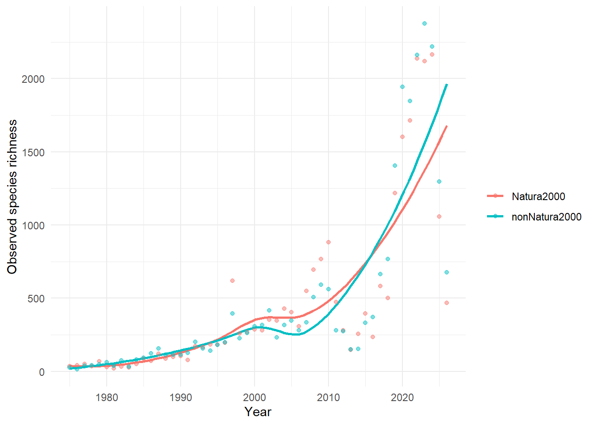
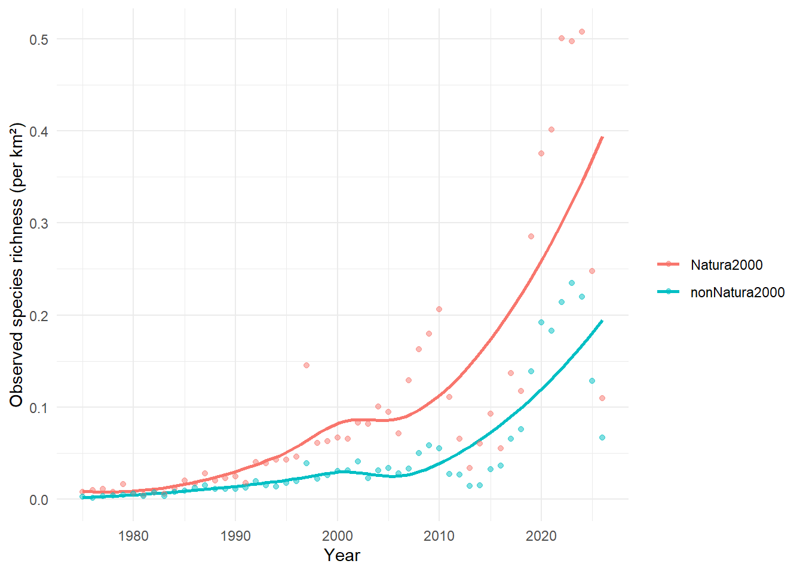
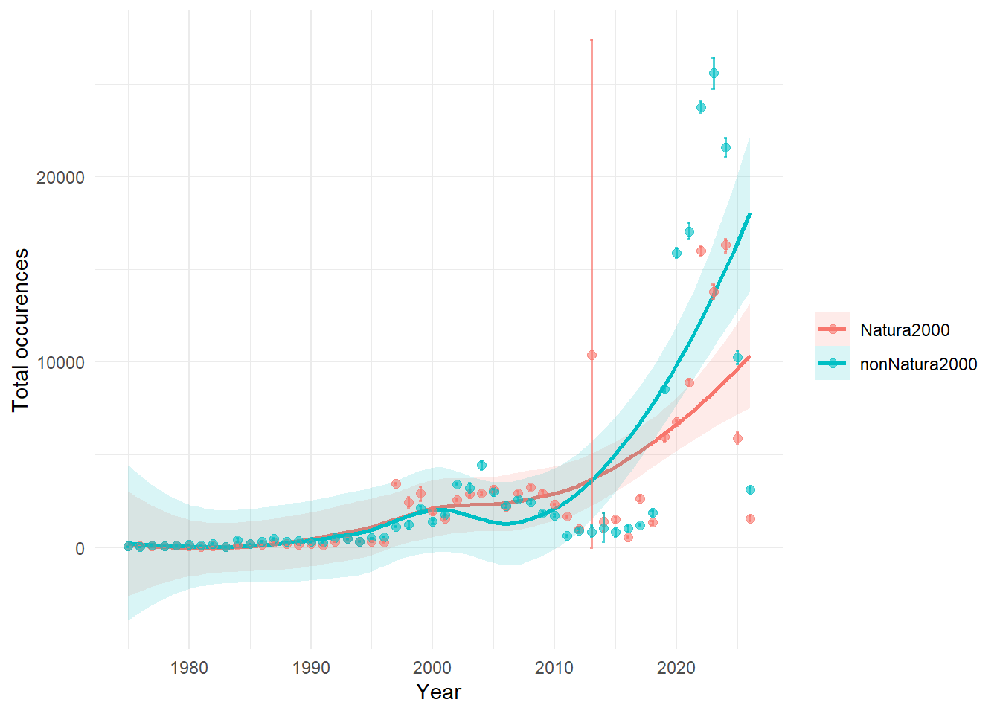
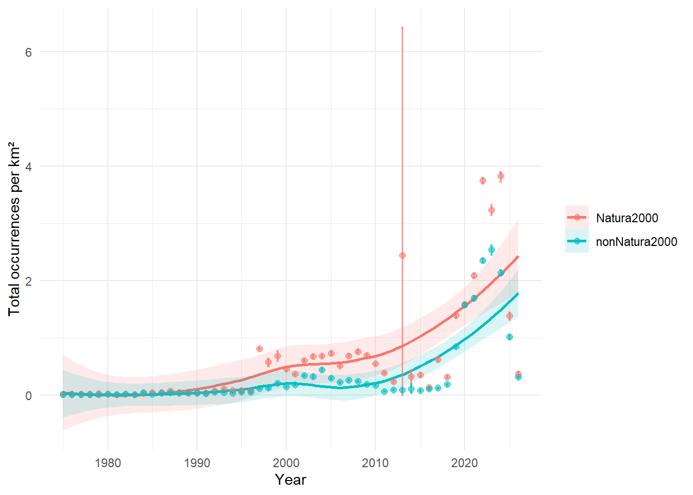
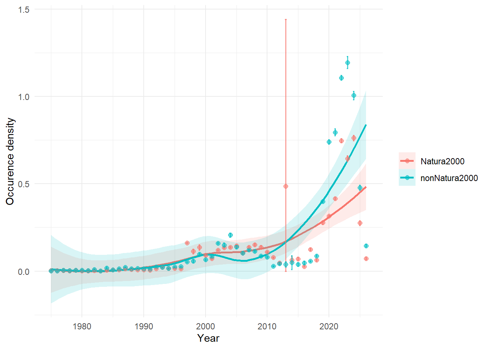
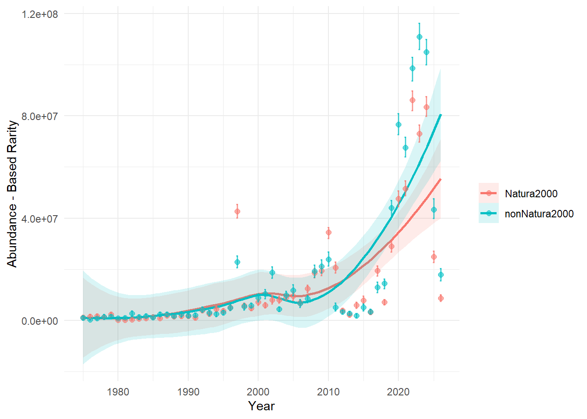
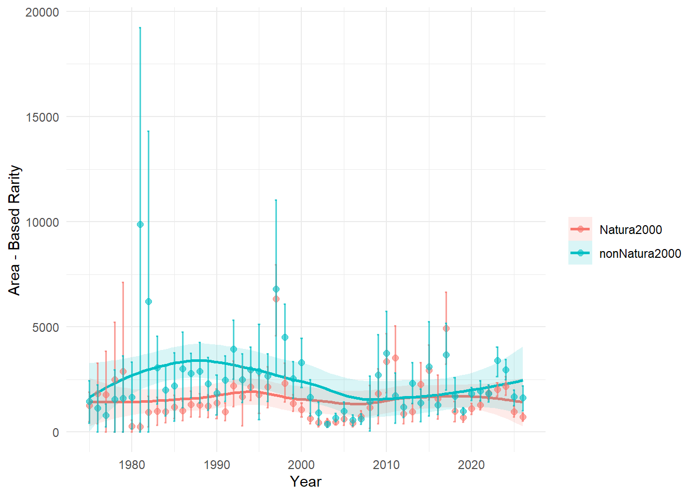
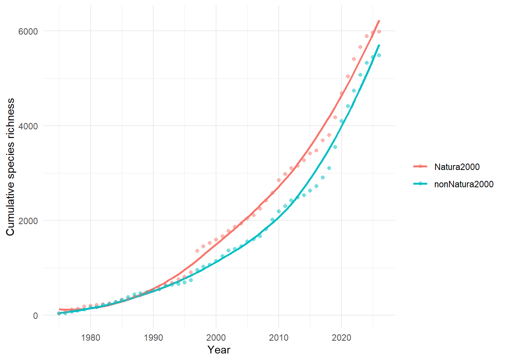
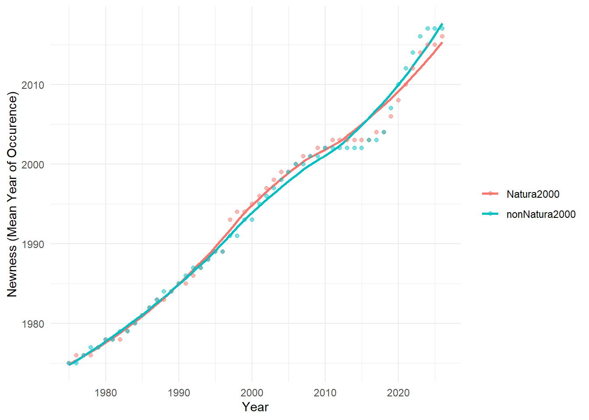
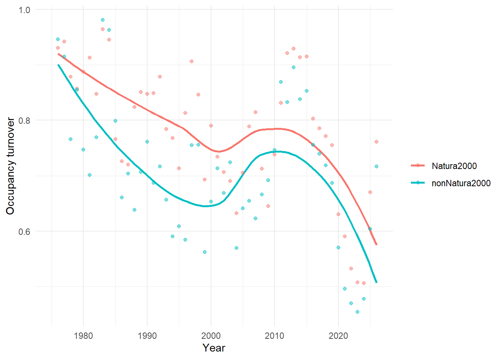

 General indicators Natura 2000 insecta
General indicators Natura 2000 insecta
TipObserved species richness
This fundamental indicator quantifies the total number of unique species per year detected in Natura 2000 versus non Natura 2000 area. It provides a straightforward measure of detected biodiversity.
Not corrected for surface area
Corrected for surface area
Show the code
area_nat <- 4267
area_non <- 10105
df_nat <- df_nat%>%
mutate(richness_adj = diversity_val / area_nat)
df_non <- df_non%>%
mutate(richness_adj = diversity_val / area_non)
df_both <- bind_rows(df_nat, df_non)
ggplot(df_both, aes(x = year, y = richness_adj, colour = Group)) +
geom_smooth(se = FALSE, size = 1) +
geom_point(alpha = 0.5) +
labs(x = "Year",
y = "Observed species richness (per km²)",
colour = "") +
theme_minimal()`geom_smooth()` using method = 'loess' and formula = 'y ~ x'
TipTotal Occurrences
This variable quantifies the overall number of species occurrence records per year in Natura2000 versus nonNatura2000 area. While not a biodiversity indicator itself, it is crucial for understanding data comprehensiveness and distribution. It is presented as a map showing data density or a time series of annual record counts.
Not corrected for surface area

Corrected for surface area

TipOccurrence Density
Occurrence Density measures the spatial concentration of records by calculating the total number of occurrences per square kilometre. This allows for more meaningful comparisons between spatial units of different sizes.

TipRarity
Rarity quantifies the scarcity or infrequency of species, and when summed over multiple species, serves as a crucial biodiversity indicator for conservation. b3gbi offers two distinct measures: Abundance-Based Rarity (based on species’ proportional occurrences) and Area-Based Rarity (based on species’ spatial occupancy). These can be mapped (indicator_map) to identify areas with a higher presence of rare species, or tracked over time (indicator_ts) to observe changes in overall rarity.
Abundance - Based Rarity

Area-based rarity

TipEstimated Hill Diversity
Hill Diversity provides a unified framework for various diversity measures, allowing for different emphases on rare versus common species through a single parameter, q. b3gbi calculates three common forms: q=0 (approximates Species Richness, weighing all species equally), q=1 (emphasizes common species, like Hill-Shannon), and q=2 (emphasizes very common species, like Hill-Simpson). These indicators represent the “effective number of species” and can be mapped (indicator_map) or tracked over time (indicator_ts) to provide multi-faceted insights into biodiversity patterns.
Species richness (q=0)
Hill - Simpson (q=2)
TipCumulative Species Richness
This indicator tracks the total number of unique species observed from the beginning of a specified time period up to a given year. It provides an estimation of how many new species are still being recorded over time within a region, helping to evaluate sampling effort and assess the overall recorded biodiversity over the study duration. This is an inherently temporal indicator, presented as a time series (indicator_ts).

TipMean Year of Occurrence (Newness)
This variable calculates the average year of occurrence for all records within a given spatial unit (e.g., grid cell, for indicator_map) or temporal unit (e.g., year, for indicator_ts), providing an estimation of the relative recency of observations. Maps can highlight areas with more recent average records, while time series show the average observation date over cumulative data.

TipOccupancy turnover
Occupancy Turnover measures the rate at which occupancy composition changes over time within a community, quantifying the balance between species “gains” and “losses” between consecutive time intervals. High turnover indicates a dynamic community with frequent species replacement, while low turnover suggests stability. This is an exclusively temporal indicator, presented as a time series (indicator_ts).
